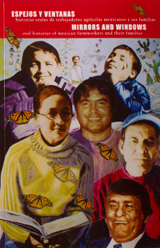

<body bgcolor="#FFFFFF" text="#000000" link="#0000FF" vlink="#CC0000" alink="#CC0000"><center><hr width="350" size="1" align="center" noshade>Oral histories of Mexican farmworkers in the Philadelphia region<hr width="350" size="1" align="center" noshade><p><a href="https://cdcshoppingcart.uchicago.edu/Cart/ChicagoBook.aspx?ISBN=9780971299665&&PRESS=temple" target="_top">Buy this book!</a> | <a href="https://cdcshoppingcart.uchicago.edu/Cart/Cart.aspx?PRESS=temple" target="_top">View Cart</a> | <a href="https://cdcshoppingcart.uchicago.edu/Cart/Cart.aspx?PRESS=temple" target="_top">Check Out</a></p><p></p></center><!--none//--><h1>Espejos y ventanas (Mirrors and Windows)</h1>
<H2>historias orales de trabajadores agricolos y sus familias (Oral Histories of Mexican Farmworkers and the Families)</H2>
<h3>edited by Mark Lyons and August Tarrier</h3>
<P>paper 0-971-2996-6-8 $15.00, Jul 12, <FONT COLOR=#990033>Available</FONT>
<BR> 318 pp
6x9
89&nbsp;halftones
</P><P><i>Espejos y ventanas</i> details the individual stories of the Mexican community of Kennett Square, a community of three generations who have migrated to work in the world's largest mushroom industry, and details their personal and political aspirations. Published with both Spanish and English versions, these oral histories provide a window into the lives of retirees who came north twenty-five years ago; of mothers and children who stayed in Mexico and finally made it over; of teenagers building a house for their family in Mexico; of children graduating from college, their feet planted in two worlds. In doing so, it provides a window into the general struggles of immigrant populations for social, political, and economic rights.
<p>Distributed by Temple University Press for the New City Community Press
<BR>&nbsp;<H2>About the Author(s)</H2>
<P><b>Mark Lyons</b> is co-director of the Philadelphia Storytelling Project. He is a fiction writer who has published several short stories, and was nominated for the Pushcart Prize. He is a recipient of Pennsylvania Council of the Arts fellowships for 2003 and 2009, and the J.P. McGrath Memorial Award from <i>Whetstone</i> Magazine.</P>
<P><b>August Tarrier</b> is an editor and manuscript consultant, specializing in novels and screenplays, as well as scholarly and academic work, including articles for professional journals, dissertations, and books. She was formerly the Editor of New City Press. She has won four national awards for her short stories, including the Zoetrope Prize.</P>
<BR><H2>Subject Categories</H2>
<p><A HREF="/tempress/latino.html" TARGET="_top">Latino/a Studies</a>
<BR><A HREF="/tempress/philly.html" TARGET="_top">Philadelphia Region</a>
<BR><A HREF="/tempress/biography.html" TARGET="_top">Biography/Memoir/Autobiography</a>
</p>
<p align="center"><a href="https://cdcshoppingcart.uchicago.edu/Cart/ChicagoBook.aspx?ISBN=9780971299665&&PRESS=temple" target="_top">Buy this book!</a> | <a href="https://cdcshoppingcart.uchicago.edu/Cart/Cart.aspx?PRESS=temple" target="_top">View Cart</a> | <a href="https://cdcshoppingcart.uchicago.edu/Cart/Cart.aspx?PRESS=temple" target="_top">Check Out</a></p><p><font face="Arial" size="1"><a href="copyright.html" onMouseOver="window.status='Web Copyright Policy';return true;" onMouseOut="window.status=''" title="Web Copyright Policy">&copy;</a> 2015 <a href="http://www.temple.edu" target="new" onMouseOver="window.status='Link to Temple University home page';return true;" onMouseOut="window.status=''" title="Link to Temple University home page">Temple University</a>. All Rights Reserved. http://www.temple.edu/tempress/titles/2226_reg.html</font></p>